PART 2: FUN WITH FREQUENCIES!
Part 2.1: Image "Sharpening"
Unsharp masking extracts high-frequency components of an image by subtracting a Gaussian-blurred (low-pass) version from the original:
$$I_{\text{high}} = I - (I * G)$$
To sharpen the image, the high frequences are added back with a scaling factor $\alpha$:
$$I_{\text{sharpened}} = I + \alpha \cdot I_{\text{high}} = I * \left( (1 + \alpha) e - \alpha G \right)$$
Below are the step-by-step unsharp masking pipelines for both the Taj Mahal and the Duomo cathedral:
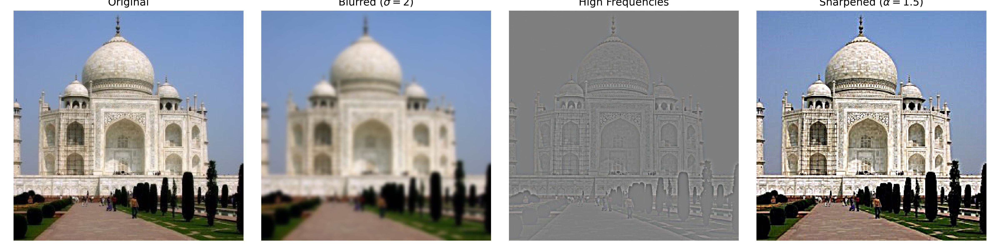
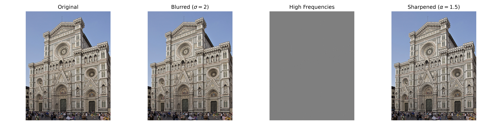
Evaluation (Blurring then Resharpening): When a sharp image is artificially blurred and subsequently re-sharpened with unsharp masking, we increase the local edge contrast to give a perceptual illusion of sharpness. However, some high-frequency details were lost during the low-pass blurring, can they cannot be fully recovered.
Part 2.2: Hybrid Images
Following Oliva, Torralba, and Schyns (SIGGRAPH 2006), hybrid images combine the low spatial frequencies of one image with the high spatial frequencies of another. High frequencies are more obvious in close-ups, while low frequencies are easily seen at greater viewing distances.
1. Hybrid Pair 1: Fourier Spectrum & Final Output
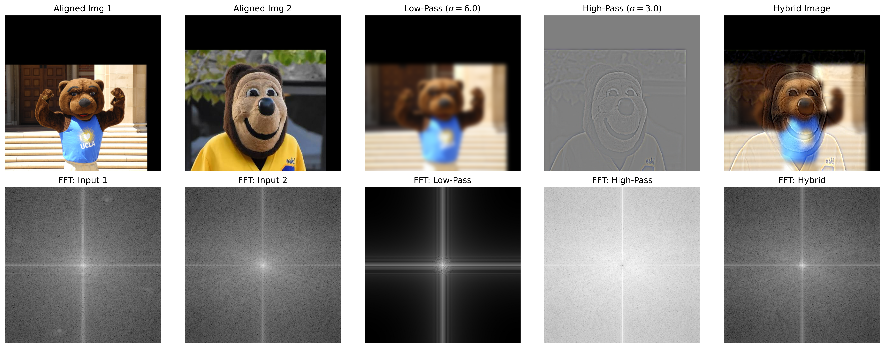
Fourier Analysis (Inputs, Low-pass, High-pass, Hybrid)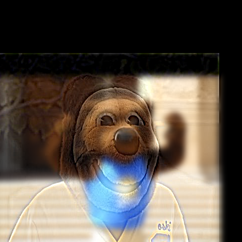
Hybrid Result 12. Hybrid Pair 2: Fourier Spectrum & Final Output
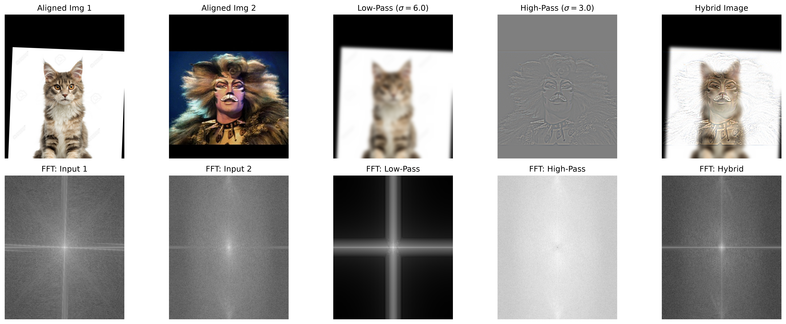
Fourier Analysis (Inputs, Low-pass, High-pass, Hybrid)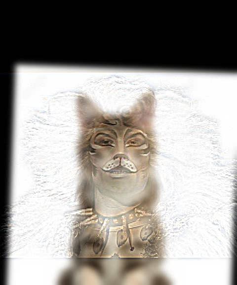
Hybrid Result 2Parts 2.3 & 2.4: Multi-Resolution Blending
Following Burt and Adelson (1983), multi-resolution blending constructs Gaussian and Laplacian stacks without spatial downsampling. Each level $l$ of the Laplacian stack is derived as:
$$L_l = G_l - G_{l+1}$$
Using a Gaussian-smoothed mask stack $G(M)$, the blended Laplacian stack $L_B$ is computed at every level $l$:
$$L_B^l = G^l(M) \odot L_A^l + (1 - G^l(M)) \odot L_B^l$$
Reconstructing $L_B$ across all stack levels yields smooth transitions without noticeable seam artifacts.
Classic Oraple (Apple + Orange) Stack Blend
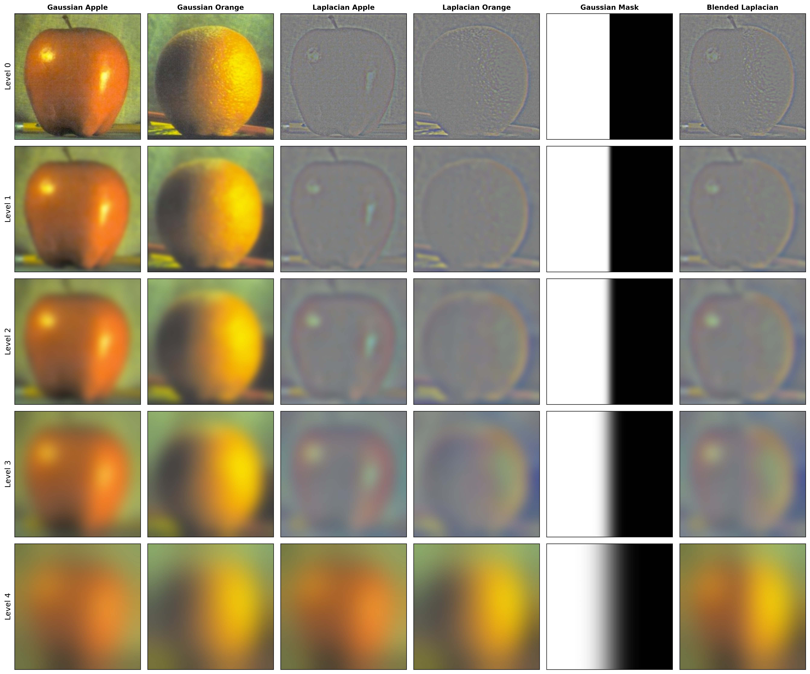
Gaussian & Laplacian Stack Decomposition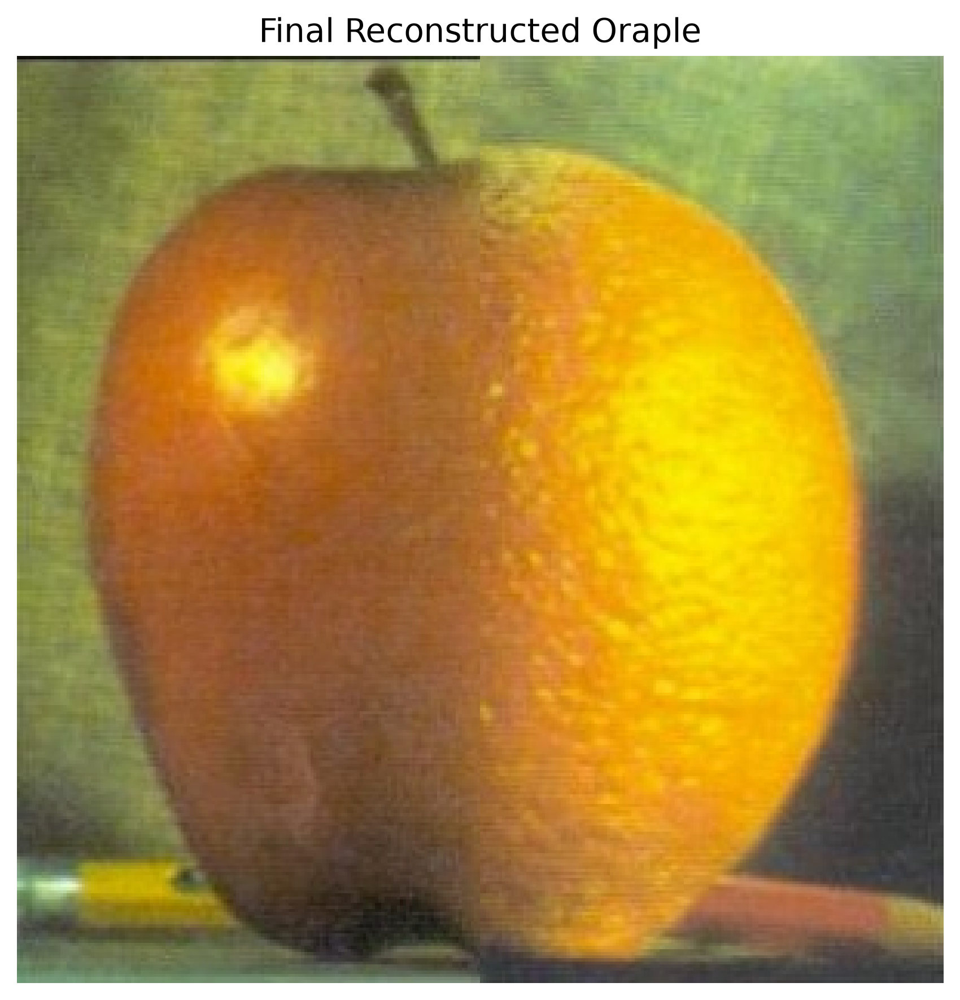
Reconstructed Oraple ResultCustom Blend 1: Candy & Flower
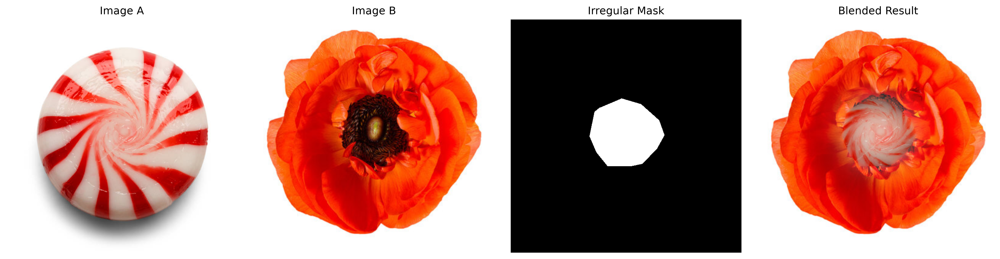
Inputs, Mask & Stack Processing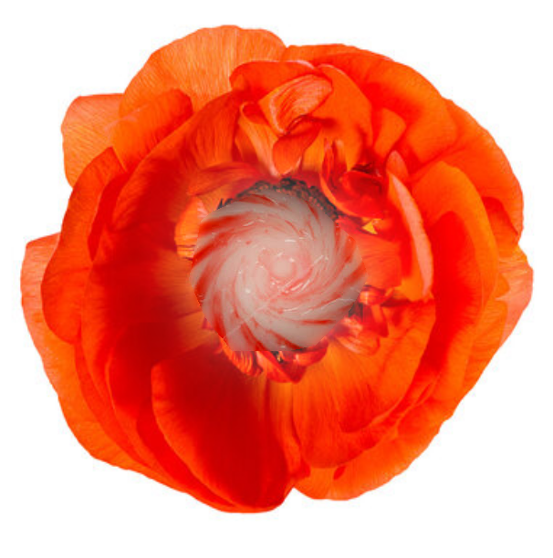
Final Blended Candy-FlowerCustom Blend 2: Lake Reflection
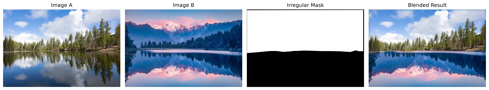
Inputs, Mask & Stack Processing Final Blended Lake Reflection
Final Blended Lake Reflection